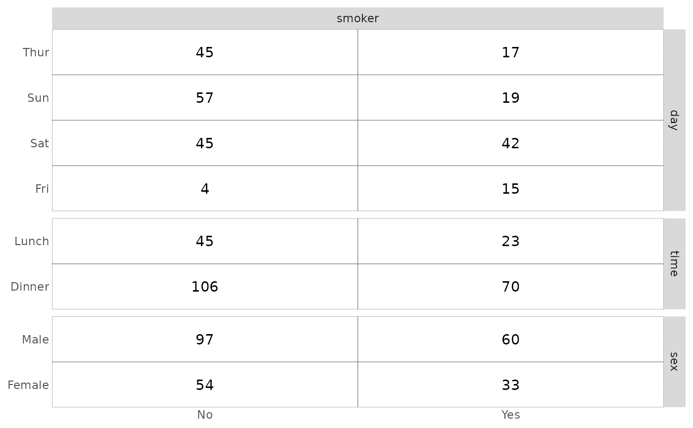

ggtable is a variant of ggduo for quick
cross-tabulated tables of discrete variables.
Arguments
- data
dataset to be used, can have both categorical and numerical variables
- columnsX, columnsY
names or positions of which columns are used to make plots. Defaults to all columns.
- cells
Which statistic should be displayed in table cells?
- fill
Which statistic should be used for filling table cells?
- mapping
additional aesthetic to be used, for example to indicate weights (see examples)
- ...
additional arguments passed to
ggduo(see examples)
Examples
# small function to display plots only if it's interactive
p_ <- GGally::print_if_interactive
data(tips)
p_(ggtable(tips, "smoker", c("day", "time", "sex")))

# displaying row proportions
p_(ggtable(tips, "smoker", c("day", "time", "sex"), cells = "row.prop"))
# filling cells with standardized residuals
p_(ggtable(tips, "smoker", c("day", "time", "sex"), fill = "std.resid", legend = 1))
# if continuous variables are provided, just displaying some summary statistics
p_(ggtable(tips, c("smoker", "total_bill"), c("day", "time", "sex", "tip")))
# specifying weights
d <- as.data.frame(Titanic)
p_(ggtable(
d,
"Survived",
c("Class", "Sex", "Age"),
mapping = aes(weight = Freq),
cells = "row.prop",
fill = "std.resid"
))